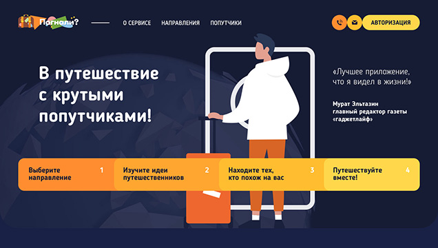
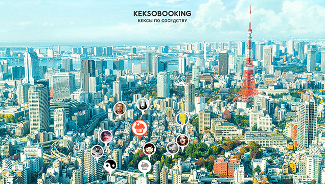

Заинтересовался веб-разработкой, во время работы в небольшом интернет магазине, где возникала необходимость оперативно вносить правки на действующий сайт. Изучал верстку в HTML-Academy. Прошел два интенсива по верстке и один по JS. За время обучения освоил HTML5, СSS3, работал в системе контроля версий Git (github), верстал статичные, адаптивные и резиновые интерфейсы из PSD-макетов (Photoshop, Figma, Zeplin), по методологии БЭМ, использовал препроцессоры LESS и SASS, получил опыт сборки проекта c помощью GULP, изучил оживление интерфейсов, валидацию форм и работу с сетью с помощью JS (ES6).
Готов к удаленной работе.
Опыт работы
Примеры работ
-

Верстка по макету без использовнаия препроцессоров, главная страница, каталог и модальные окна
-

Верстка по макету без использовнаия препроцессоров, главная страница, каталог и модальные окна
-

Адаптивная верстка по макету с использование препроцессора SASS, BEM и сборки GULP, главная страница, каталог, форма и модальные окна. Адаптация сложной сетки под три разрешения экрана на flexbox, без использования фреймворков
-

Загрузка и отпрака данных по cети (HTTPRequest), рендеринг новых элементов и валидация форм на чистом JS
Образование
Московский Автомобильный Технический Институт
Сервис транспортых и технологических машин (Автомобильный транспорт) 2013
HTML-academy
Профессиональный курс: HTML и СSS, 1й уроверь.2018
Профессиональный курс: HTML и СSS, 1й уроверь.2019
Профессиональный курс: Адаптивная верстка и автоматизация, 2й уроверь.2019
Профессиональный курс: JavaScript, Профессиональная разработка веб-интерфейсов. 1й уроверь.2020
Профессиональный курс: JavaScript, Архитектура клиентский приложений. 2й уроверь.2020